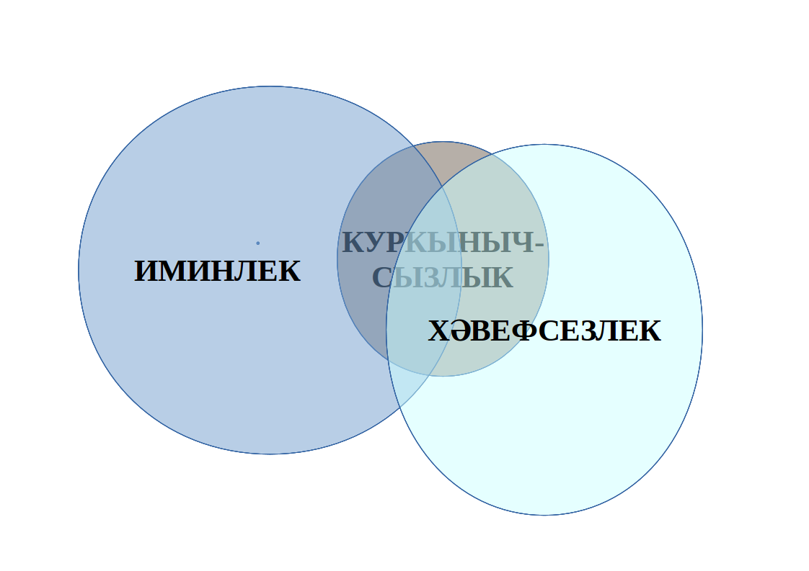

class: center, middle #### Tatarstan Academy of Sciences ## Synonymy of Tatar Socio-Political Terms (on corpus data) ### **Alfiya Galieva**, Olga Nevzorova ###(amgalieva@gmail.com) --- ##Outline Introduction Available Tatar corpora Tatar socio-political vocabulary Synonymy as a lexical phenomenon Absolute (total) synonyms Synonymy of Tatar socio-political terms - One word items - Two-word items Fixing synonyms in lexicographic resources Conclusion References --- ## Introduction (1) The socio-political domain is a broad sphere of contemporary social relations: - politics and international relations, - economical issues, - military sphere, - religion, - arts, - sports, etc. Socio-political vocabulary is strongly influenced by political, ideological and other factors and is historically changeable. --- ###Introduction (2) The Tatarstan Republic is multiethnic and multicultural region of Russia. Tatar is the language of the ethnic majority in the Republic; Tatars make up 53.2% of the Republic’s population. Tatar co-exists with Russian as a state language under the current legislation that proclaims them as equal, according to the *Law on Languages* which was adopted in 1992. Tatar considerably concedes to Russian in - functionality, - domains of language use, - social status and prestige, - the degree of proficiency of people who use it. --- ### Available Tatar corpora Two main corpora have been built for the Tatar language by now, each in open access: 1) **The Corpus of Written Tatar** (http://corpus.tatar/) compiled by researchers of Kazan Federal University; 2) **“Tugan Tel” Tatar National Corpus** (http://tugantel.tatar/) developed at the Institute of Applied Semiotics of Tatarstan Academy of Sciences. --- ### Tatar corpora and their functionality Criteria of comparing||Tatar National Corpus||Corpus of Written Tatar :-------------------:||:-------------------:||:---------------------- Launch date ||2012 ||2012 Corpus volume ||118,000,000 ||116,000,000 Morphological annotation|| + || + Search for morphological categories|| + ||+ The main source for morphological tags||Leipzig Glossing Rules||Apertium project tags for Turkic languages Grammatical disambiguation|| - || - Stylistic features of texts represented||non-fiction texts – 28% fiction- 72%||non-fiction texts – 65% fiction- 35% Search for a phrase||+ ||+ Search for part of word|| + ||+ Output per page ||10 contexts ||50 contexts --- ### Tatar socio-political vocabulary Currently Tatar terminology is coined by: - community of professional linguists – dictionary compilers; - branch terminology developers; - professional translators of state structures; - journalists from various media; - translators of the Institute of Tatar Encyclopedia, etc. --- ### Emergence of synonymous terms/items Development of Tatar vocabulary is influenced by different world-views and ideological attitudes - focusing on **Tatar (Turkic)** vocabulary and grammatical models; - focusing on **Oriental** languages (**Arabic** and **Persian**); - focusing on **Russian** vocabulary; - focusing on **international (European)** vocabulary. Iinstability and imbalance in Tatar terminology, when diverse synonymous terms and terminological variants of different origin and structure are in actual use. Causes: - coexistence of different centres of building Tatar terms; - lack of coordination between them. --- ###Synonymy as a lexical phenomenon Synonymy is a fundamental notion in linguistics manifesting itself in all levels of a language. Linguists regard lexical synonymy as a mark of high development and prosperity of a language. The linguistic interpretation of synonymy is caused by a comprehension of lexical meaning, its nature and structure and is implemented within a certain theoretical framework. --- ###Absolute (total) synonyms A prevailing point of view: absolute (total) synonymy **occurs infrequently** because >*yet even if near-synonyms do name one and the same thing, they name it in different ways: they present different perspectives on a situation* (Divijak 2010). According to Lyons (1995) two (or more) synonymous expressions are **absolute synonyms** if they satisfy the three following conditions: >1) all their meanings are identical; >2) they are synonymous in all contexts; >3) they are semantically equivalent (i.e. their meaning or meanings are identical) in all the dimensions of meaning, both the descriptive and the non-descriptive one (Lyons 1995). --- The situation in Tatar socio-political vocabulary in many respects refutes this thesis about rareness of the absolute synonymy. We found huge amount of Tatar lexical items - having the same meaning and identical collocations; - not having differences in style and register; - related to the same chronological layer of vocabulary (?) --- ###One word synonyms Coexistence of synonyms of different origin - European (Greek, Latin, English); - Oriental (Arabic, Persian); - Russian; - Tatar and Turkic. --- Distribution of synonyms of different origin in Tatar texts (1) Word ||Translation || Origin || Number in CWT || Number in TNC :------------:||:--------------:||:---------------:||:----------------:||:-- экономик ||economic || Greek ||621 ||676 икътисади ||economic ||Arabic ||27 351 ||22 274 ... ||... ||... ||... ||... политик ||political || Greek ||1 005 ||1 536 сәяси ||political ||Arabic ||25 011 ||24 489 ... ||... ||... ||... ||... республика ||republic ||Latin ||316 667 ||258 433 җөмһүрият ||republic ||Arabic ||2 479 ||1 631 ... ||... ||... ||... ||... информация ||informational ||Latin ||1 095 ||95 881 мәгълүмат ||informational ||Arabic ||1 176 ||77 890 ... ||... ||... ||... ||... суд ||court of law, trial||Russian ||15 725 ||13 873 мәхкәмә ||court of law, trial||Arabic ||8 718 || 4 957 --- Distribution of synonyms of different origin in Tatar texts (2) ### Words denoting *patriotism* Word ||Translation|| Number in CWT || Number in TNC :------------:||:--------------:||:---------------:||:----------------:||:-- патриотизм || patriotism || 763 ||703 || патриотлык || patriotism ||446 ||105 ватанпәрвәрлек|| patriotism ||861 ||728 --- ### Distribution of synonyms of Tatar origin Words denoting *businessman* and *business / entrepreneurship* Word ||English translation|| Number in CWT || Number in TNC :------------:||:--------------:||:---------------:||:----------------:||:-- эшкуар ||'businessman ' ||8 606 ||11 280 || эшмәкәр ||'businessman' ||22 671 ||13 876 кәсәбәче ||'businessman' ||122 ||20 ... || ... || ... ||... эшкуарлык ||'business, entrepreneurship'||2 641 ||3 852 эшмәкәрлек ||'business, entrepreneurship'||6 454 ||4 207 кәсәбәчелек ||'business, entrepreneurship'||67 ||14 --- ### The most frequent collocations of words *эшкуарлык* and *эшмәкәрлек* Typical collocations of word *эшкуарлык* ||Number in Corpus of Written Tatar||Typical collocations of word *эшмәкәрлек*||Number in Corpus of Written Tatar :--------------------------------------:||:------------------:||:--------------------:||:----------------:||:-- эшкуарлык комитеты 'business committee' ||339 ||эшмәкәрлек субъекты 'business entity' ||447 эшкуарлык субъекты 'business entity ||186 ||эшмәкәрлек комитеты 'business committee' ||183 эшкуарлык эшчәнлеге 'business activity' ||94 || эшмәкәрлек үсеше 'development of business' || 269 эшкуарлык үсеше 'development of business' ||65 ||эшмәкәрлек эшчәнлеге 'business activity' ||257 --- ### Two-word items Regular correspondences in Turkic languages: **ADJ + N** and **N +N, POSS_3** 1.*инновацион сәяәсәт* (ADJ + N), *инновация сәясәте* (N +N, POSS_3) 'innovation policy'; 2.*Конституцион суд* (ADJ + N), *Конституция суды* (N +N, POSS_3) 'Constitution Court'; 3.*табигый ресурслар* (ADJ + N), *табигать ресурслары* (N +N, POSS_3) 'natural resources' --- ### Lexical items denoting *joint-stock company* Lexical item ||Grammatical model ||Number in CWT ||Number in TNC :-----------------------:||:--------------------:||:--------------------:||:----------------:| акционерлык җәмгыяте ||N, NMLZ +N, POSS_3 ||4320 ||1640 акционерлар җәмгыяте ||N, PL +N, POSS_3 ||274 ||77 акционер җәмгыять ||ADJ + N ||97 ||9 ... ||... ||... ||... акционерлык ширкәте ||N, NMLZ +N, POSS_3 ||13 ||4 акционерлар ширкәте ||N, PL +N, POSS_3 ||1 ||- акционер ширкәт ||ADJ + N ||4 ||- ... ||... ||... ||... акционерлык оешмасы ||N, NMLZ +N, POSS_3 ||13 ||7 акционерлар оешмасы ||N, PL +N, POSS_3 ||1 ||4 акционер оешма ||ADJ + N ||14 ||1 --- ###Use of quasi-synonyms **безопсность** ‘security, savety, saveness’ 1) *куркынычсызлык* 'savety, saveness' 2) *иминлек* 1) 'savety, saveness'; 2) 'well-being'; 3) 'inviolability, integrity'. 3) *хәвефсезлек* 1) ‘savety, saveness’; 2) misfortunelessness **Inclusion** and **intersection** relationship  --- ###Neutralization of semantic differences in phrases (data from CWT) ГОСУДАРСТВЕННАЯ БЕЗОПАСНОСТЬ ‘state security’ - дәүләт **куркынычсызлыгы** ‘state security’ - 176 - дәүләт **иминлеге** ‘state security’ - 279 - дәүләт **хәвефсезлеге** ‘state security’ - 11 РЕМЕНЬ БЕЗОПАСНОСТИ ‘safety belt’ - **куркынычсызлык** каешы ‘safety belt’ - 538 - **иминлек** каешы ‘safety belt’ - 282 - **хәвефсезлек** каешы ‘safety belt’ - 30 ТЕХНИКА БЕЗОПАСНОСТИ ‘safety engineering’ - **куркынычсызлык** техникасы ‘safety engineering’ - 262 - **иминлек техникасы** ‘safety engineering’ - 17 - **хәвефсезлек** техникасы ‘safety engineering’ - 7 --- ### Lexical items denoting *mass media* Lexical item ||Number in CWT ||Number in TNC ||Main sources :-----------------------------------:||:-------------:||:----------------:||:-- **массакүләм** мәгълүмат чаралары ||5 050 ||3 334 ||Main information agencies and newspapers **гаммәви** мәгълүмат чаралары ||2 530 ||1 305 ||Main information agencies and newspapers **киңкүләм** мәгълүмат чаралары, ||550 ||1 760 ||Tatar-Inform IA; newspapers «Безнең гәҗит», «Өмет» **күмәк** мәгълүмат чаралары ||111 || 1 ||District newspaper «Бөгелмә авазы» --- ###Fixing synonyms Tatar socio-political synonyms currently are fixed in two lexicographic resources (work in progress): - Russian-Tatar thesaurus on socio-political sphere (http://tattez.antat.ru/); - Tatar-Russian Socio-Political Dictionary of collocations (http://spdict.antat.ru). --- ### Conclusion (1) Coexistence of huge number of semantic doubles (absolute synonyms) is one of the characteristics of the current language situation in Tatarstan Republic. Such semantic doubles abound in one-word items level as well as multi-word items level and they form synsets (doubles, triplets, multiplets) composed of items of different origin and structure. Parallel denominations can be used for a wide range of phenomena, including some official names of departments and state structures. Besides, many words have wide spread orthographic variants. --- ### Conclusion (2) Presently Tatar socio-political vocabulary is strongly influenced by Russian. Main causes of emerging semantic doubles are - languages contacts (on-going stream of loan-words and semantic calquing); - richness of Tatar vocabulary and potential grammatical models; - dissimilar decisions made by terminology developers/translators. --- ### Conclusion (3) On one-word level - competition of words/word stems of different origins. On multi-word level - competition of words/word stems of different origins is complicated by variability of grammatical models of phrases. We can conclude that a certain Tatar terminology management is required. It may be *descriptive* (describing how terms are used in documents and media texts) and *prescriptive* (or even *normative*) to document compilers (prescribing what terms must be used in standard work and official documentation and how they must be used). --- ###References Corpus of Written Tatar // http://corpus.tatar/ Tatar National Corpus // http://tugantel.tatar/ Амиров, Ф. К. Русско-татарский юридический словарь. - Казань: Татар. кн. изд-во, 1996. Низамов И. М. Краткий русско-татарский общественно-политический словарь / И.М.Низамов. Казань: Татар, кн. изд-во, 1995. Русско-татарский общественно-политический словарь / Ф. А. Ганиев, И. М. Низамов и др.- Казань: Татар, кн. изд-во, 1997. Русско-татарский словарь актуальной лексики / Научн. ред. Ф.И.Тагирова, А.А. Тимерханов; Сост. Р.Р. Абдуллина, А.Ф. Гайнутдинова и др. - Казань: Татарское кн. Изд-во, 2014. Cruse, A. (1986). Lexical Semantics. Cambridge: Cambridge University Press. Divjak, D. (2006). Ways of intending: delineating and structuring near-synonyms. Berlin: Mouton de Gruyter, 19-56. Edmonds, P. and Hirst, G. (2002). Near-synonymy and lexical choice. Computational Linguistics. 28(2), 105-144. Lyons, J. (1995). Linguistic Semantics. Cambridge: Cambridge University Press. O’Keeffe A. and Walsh, S. (2010). Vocabulary matrix. Understanding, learning, teaching. Croatia: Heinle. --- #Thank you!